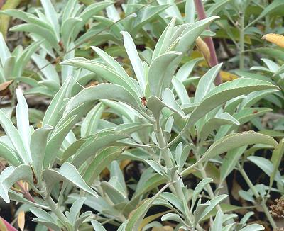
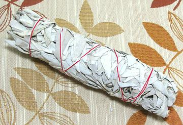

Garden / Greek Sage

[Sacred Sage, Coastal Giant Sage; Salvia apiana]
Native to the coastal scrub of Southern California and Mexico, this
tall (to 5 feet) sage is used as a cleansing incense by American
Indians, some Neopagan groups and other spiritual seekers. The leaves
look much like those of Garden Sage, just a lot bigger, and can be
used in cooking. It is also used medicinally, especially to suppress
mucous secretions from the sinuses, throat and lungs. I have used this
sage gathered in Ojai California and found a strong tea made from it
quite effective. It is not recommended for nursing mothers as it
suppresses lactation. Coastal Indian tribes have used the seeds to
make porridge.
Photo by Stan Shebs distributed under license
Creative Commons
Attribution-ShareAlike v3.0 Unported Attribution required
More on Sage.

The photo to the left shows a typical White Sage Smudge Stick for use as
a cleansing incense in American Indian / Pagan ceremonies. It is 8
inches long and 1-3/4 inches diameter. I got it as a door prize at a
Christmas party, and, very unexpectedly, one I actually wanted and could
use. Though it is intended to be burned as is, I will probably
disassemble it and use part as ceremonial incense, and part as a
medicinal.
Cooking:
This sage can be used similarly to Garden Sage,
but keep in mind it is very much stronger, so cut down the recipe
amount at least to half.
Ceremonial:
The smoke of this sage, set smoldering, is
the preferred incense for cleansing the premise for mystical rituals
or ceremonies held in North America. While originally much used by
American Indians, it has been adopted by many other practices,
including some Yoga disciplines. To my knowledge the mainstream
Christian Churches are not currently using this incense.
Medicinal
: I have found that a strong tea of Giant
White Sage, taken when I have a cold, dries me up for hours, without
the side effects of pharmaceutical potions. The downside is that the
tea is a bit strong and bitter. Cleveland Sage also works, but Garden
Sage is useless for this purpose. This is, of course, strictly hearsay
and can not in any way be construed as medical advice for treatment
of any disease or condition.
Buying:
If you don't know of a Pagan dispensary in
your area, various size and shape bundles of this sage are widely
available on the Internet.
Storing:
In an airtight container, kept away from heat
and sunlight, it should maintain potency for at least 6 months.
mt_sagewz* 160401 - www.clovegarden.com
©Andrew Grygus - agryg@clovegarden.com - Photos on this
page not otherwise credited are © cg1 -
Linking to and non-commercial use of this page permitted